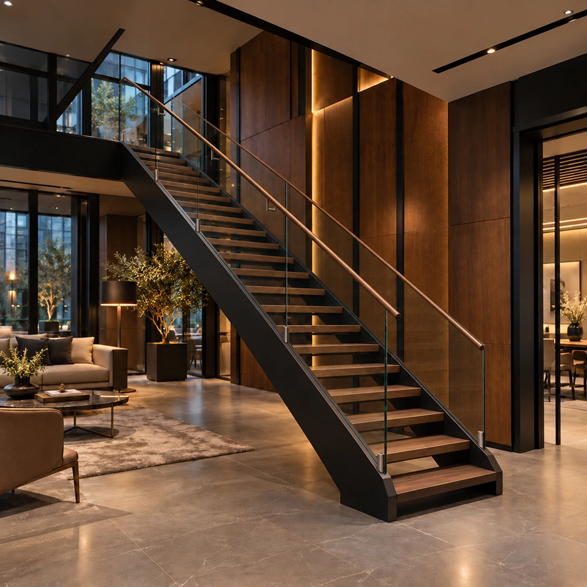

ЛЕСТНИЦЫ ПО ИНДИВИДУАЛЬНОМУ ПРОЕКТУЛестница.
Лестница.
Часть вашего дома.
Проектируем и изготавливаем лестницы на заказ. Подберём конструкцию и отделку под пространство вашего интерьера.
Обсудить лестницу
КОНСТРУКЦИЯ И ОТДЕЛКАКонструкция.
Конструкция.
Материал. Детали.
Геометрия марша, ступени, поручень и ограждение. Обсудим проём и пожелания, чтобы лестница была удобной и сочеталась с домом.
Обсудить мой проект